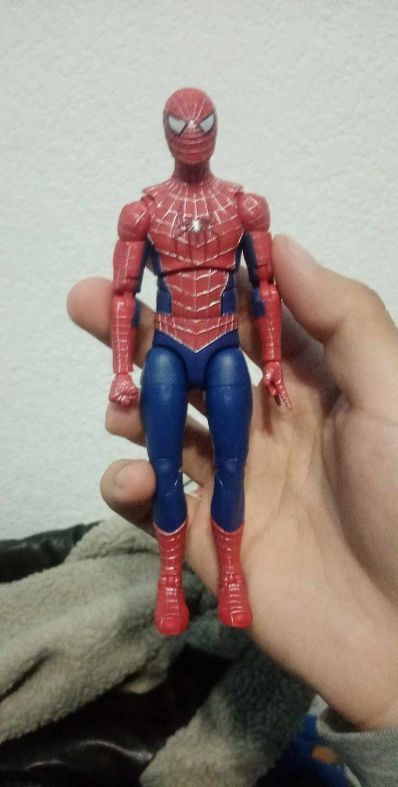
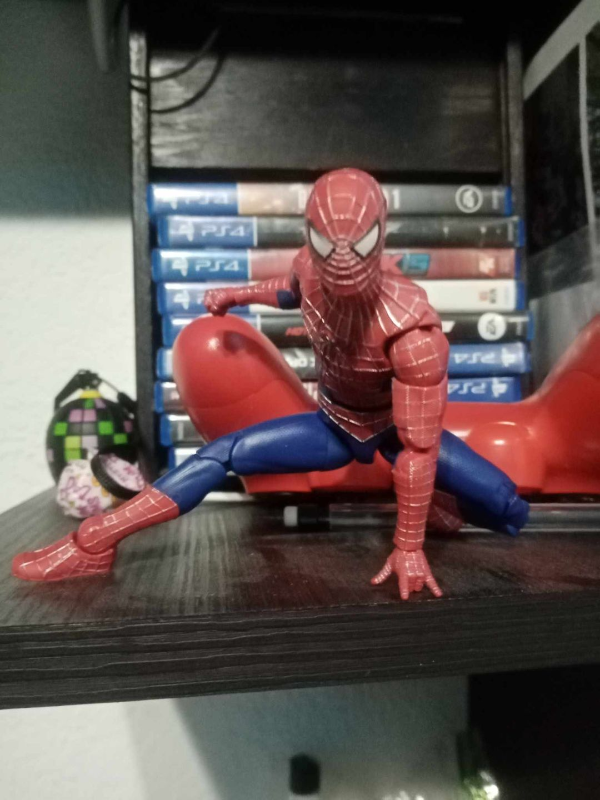
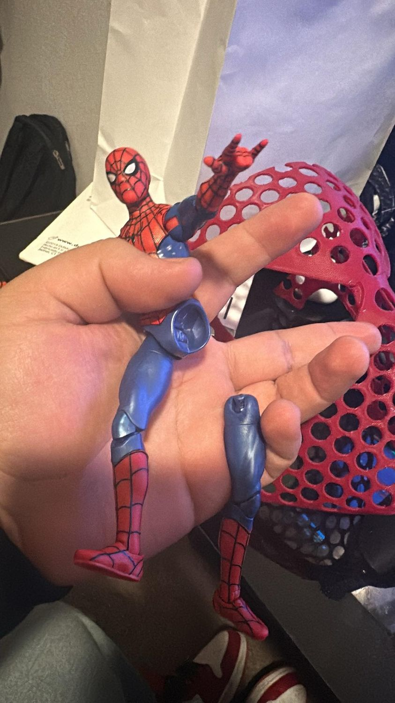
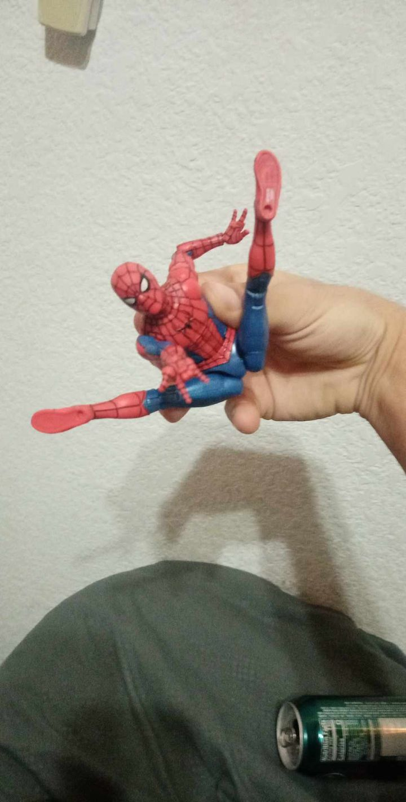
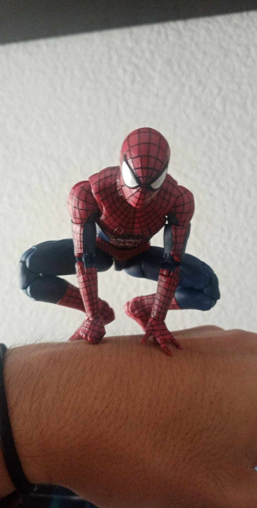
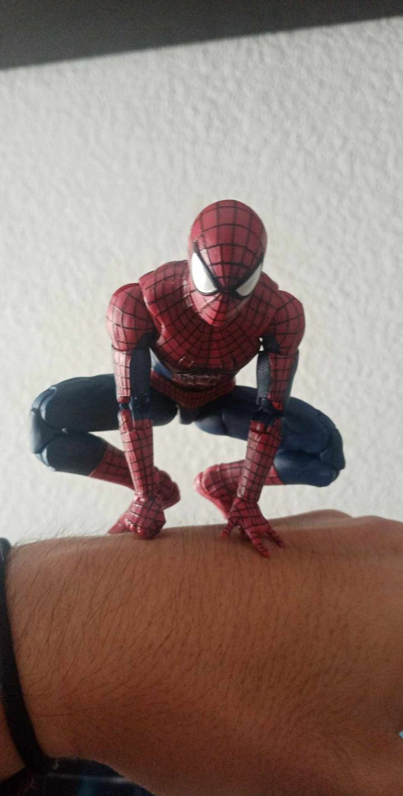
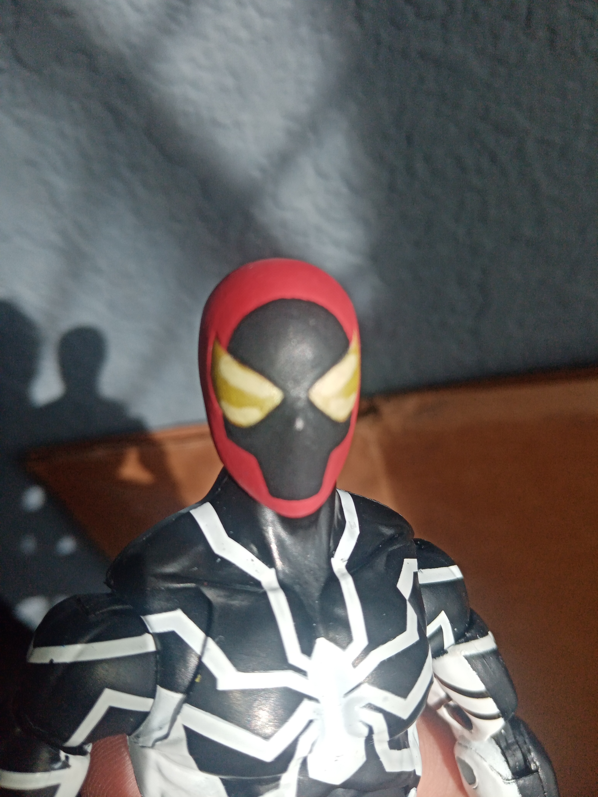

Nuevas noticias

Reparación drop-down de Spider-man #3
La tercer reparación del drop-down de una figura de Marvel Legends
Esta reparación fue la tercera de anteriores. Según los estándares de calidad ya vistos con Hasbro, muchas personas recibían sus figuras muy apretadas y quebradizas en esta ocasión me tuve que meter a realizar nuevas técnicas para poder reparar esta articulacion. Por si fuera poco, las dos tambien se iban a romper al mismo tiempo igual reforce, incluso hasta aumenté el rango de movimiento de las piernas, los hombros y ligeramente en la cabeza.
 Si deseas ver más imágenes, consulta la sección "Galeria"

Reparación drop-down de Spider-man #2
La segunda reparación del drop-down de una figura de Marvel Legends
Esta reparación fue la segunda entre dos. Según los estándares de calidad ya vistos con Hasbro, muchas personas recibían sus figuras muy apretadas y quebradizas en esta ocasión me tuve que meter a realizar nuevas técnicas para poder reparar esta articulacion. En esta el problema principal fue el tipo de plastico con la que estaba hecha, ¡Los polvos de mica no son buenos para dar estructura!
 Si deseas ver más imágenes, consulta la sección "Galeria"
Reparación drop-down de Spider-man #1
La primer reparación del drop-down de una figura de Marvel Legends
Esta reparación fue la primera de muchas que creía tener a futuro. Según los estándares de calidad ya vistos con Hasbro, muchas personas recibían sus figuras muy apretadas y quebradizas en esta ocasión me tuve que meter a realizar nuevas técnicas para poder reparar esta articulacion. Por si fuera poco, las dos se terminaron de romper al mismo tiempo, pero no me detuvo y seguí reforzando, incluso hasta aumenté el rango de movimiento de las piernas, los hombros y la cabeza.
 

Si deseas ver más imágenes, consulta la sección "Galeria"
Cabeza repintada de Spider-man Unlimited
Repintado de la cabeza de Spider-man future foundation de Marvel Legends.
Algo complicado al repintar fueron los ojos. Por mas parecidos que fueran, se distinguia mucho la forma y tuve que ajustar el patrón de pintura.

Si deseas ver más imágenes, consulta la sección "Galeria"
Spider-man Unlimited MAFEX (bootleg)
Un custom único con un cuerpo inesperado...
Está figura fue hecha con un bootleg del spider-man 075. Todos los detalles fueron reesculpidos, #telarañas y #capa #posable , una cabeza inspirada en across the spider-verse y una cabeza de Peter Parker en el estilo del show


Si deseas ver más imágenes, consulta la sección "Galeria"